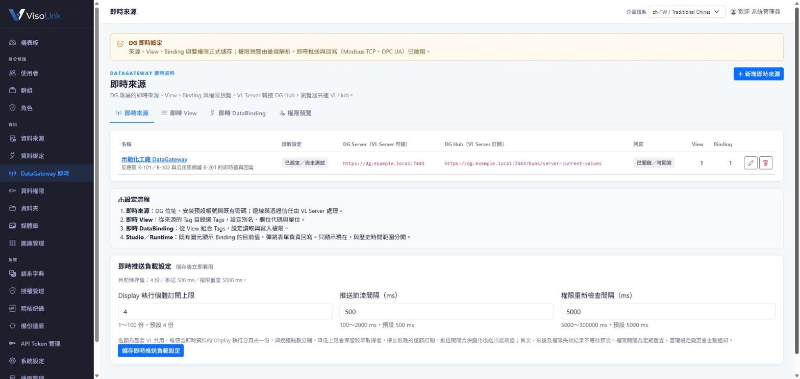
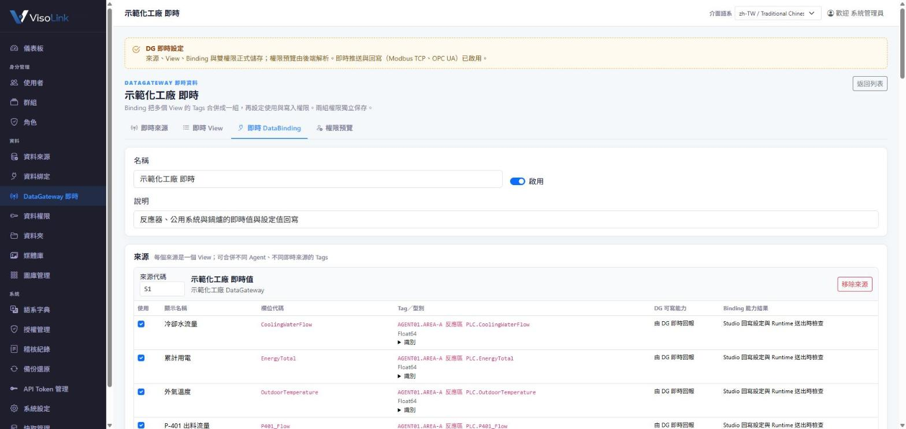
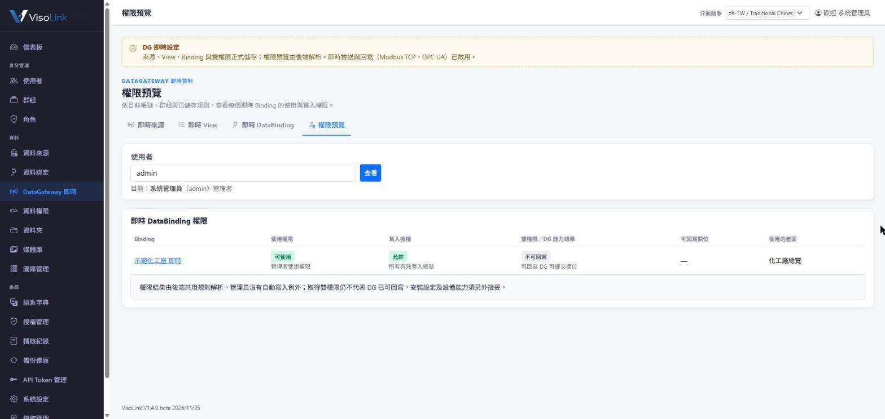

DataGateway 即時
讓 Display 直接顯示 DataGateway（DG）的設備目前值，並可透過回寫表單把設定值送回設備。這是 VisoLink 與 DataGateway 之間專用的即時與回寫連線；歷史資料請改用 VisoLink DataGateway 資料來源。
認識 DataGateway 即時與設定流程

瀏覽器只連 VisoLink，不直接連 DG；即時值只顯示「現在」，和歷史時間範圍分開。
新增即時來源與配對碼
即時來源只需要 DG 的配對碼，不需要 DG 管理員或 Agent 帳密，也不必搬憑證或改設定檔。配對碼在 DG 總覽「容器連線設定資訊 → VisoLink 即時與回寫」按「顯示」後複製。

- 在「即時來源」分頁點「新增即時來源」。
- 輸入名稱與說明，保持「啟用來源」開啟。
- 在「DG 配對碼」貼上從 DG 複製的配對碼。
- 確認畫面顯示的 DG 位址、讀取帳號、回寫服務身分與 DG 憑證（CN、到期日、指紋）。
- 繼續測試連線後儲存。
配對碼更換：編輯既有來源時，配對碼欄留空代表保留原配對；DG 重新產生配對碼後舊碼立即失效，請在這裡貼上新的。配對碼內的機密加密保存，不會回顯。
測試連線與開放回寫
- 點「測試連線」。
- 成功時顯示「目錄：DG Tag 目錄讀取通過。Hub：DG Hub 身分與連線檢查通過。」
- 需要從 VisoLink 回寫設備時，開啟「允許經由 VisoLink 回寫這個 DG」。
- 點「儲存來源」，再點「接著建立 View」。
清單顯示這個來源，回寫欄位顯示「已開啟／可回寫」或未開啟。
回寫還需要 DG 與 Agent 端都允許（Agent 連線開啟回寫並設定寫入安全規則），以及 DataBinding 的寫入權限，缺一不可。
建立即時 View
即時 View 以 DG 的 TagId 識別 Tag；來源 Agent／Connection 與名稱只供顯示，DG 更換來源或改名都不會改變 Tag 身分，畫面不必重設。

- 在「即時 View」分頁點「新增 View」。
- 輸入名稱、選擇即時來源、填寫說明，保持「啟用 View」。
- 在 Tag 目錄用篩選或「搜尋 Tag 名稱」找到 Tag；只要可寫的 Tag 時勾「只看可寫」。
- 勾選要用的 Tag，在右側「已選 Tags」修改顯示名稱、欄位代碼（Symbol 引用名稱，同一 View 不可重複）與單位。
- 點「儲存 View」，再點「接著建立 Binding」。
「DG 可寫」欄顯示「不可提交」與原因代碼時，代表 DG／Agent 端尚未允許寫入（例如尚未指定寫入安全規則），可讀取但無法回寫。
建立即時 DataBinding 與雙權限
即時 DataBinding 把一個或多個 View 的 Tag 合併成一組，再分別設定「使用權限」與「寫入權限」。兩組權限獨立儲存。


- 在「即時 DataBinding」分頁點「新增 Binding」。
- 輸入名稱、說明，保持「啟用」。
- 選擇 View 後點「加入來源」，在欄位清單勾選要使用的欄位。
- 「使用權限」選「所有已登入使用者」或「指定的使用者與群組」。
- 「寫入權限」同樣選擇；指定對象且清單空白時預設拒絕。
- 檢查「權限結果」後點「儲存 Binding 與雙權限」，可再點「接著查看使用者有效權限」。
寫入權限預設拒絕，管理員沒有自動寫入例外；只有公開模式或明確規則才會授予寫入。
權限預覽
依目前帳號、群組與已儲存規則，查看某位使用者對每個即時 Binding 的使用與寫入權限。

- 點「權限預覽」分頁。
- 在「使用者」輸入帳號，點「查看」。
- 逐列檢查「使用權限」「寫入授權」與「雙權限／DG 能力結果」。
判讀：取得雙權限仍不代表 DG 已可回寫，安裝設定與設備能力須另外確認；結果為「不可回寫」時，先到即時 View 檢查「DG 可寫」欄。
即時推送負載設定
在「即時來源」分頁下方的「即時推送負載設定」，控制整套 VisoLink 的即時推送量，儲存後立即套用。
- Display 執行個體訂閱上限
- 1～100 份，預設 4 份。每個開著即時資料的 Display 執行分頁占一份；與授權點數分開計算。降低上限時保留較早取得者，停止較晚的超額訂閱。
- 推送節流間隔（ms）
- 100～2000 ms，預設 500 ms。間隔內的變化合併後送出最新值。
- 權限重新檢查間隔（ms）
- 5000～300000 ms，預設 5000 ms。定期重查權限；管理設定變更時會主動通知。
- 修改欄位值。
- 點「儲存即時推送負載設定」。